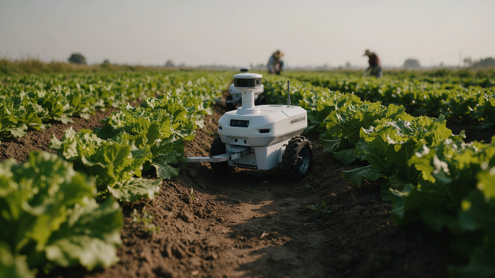
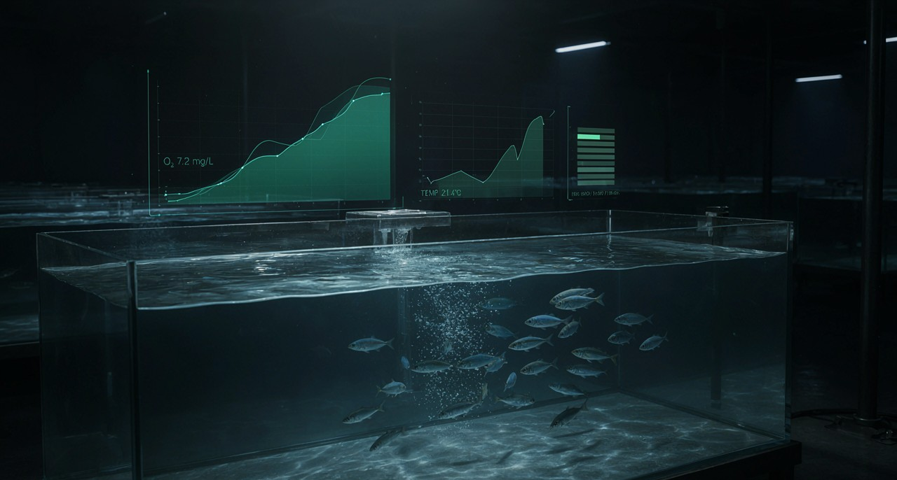
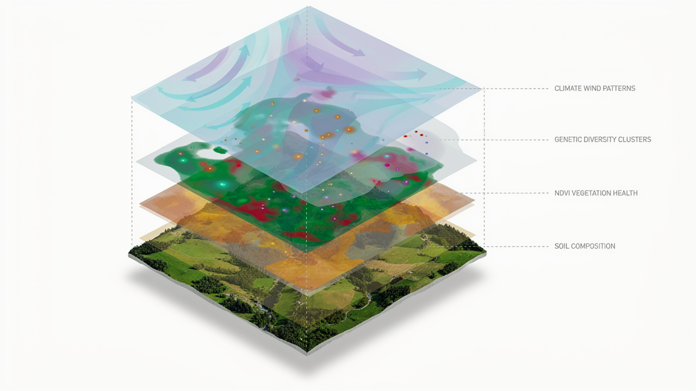

Data & IA
- Python
- Pandas · NumPy
- Scikit-learn
- Visualisation de données
- Machine learning
INGÉNIEUR AGRONOME · AGROTIC
Je développe mes compétences à l’intersection de l’agronomie, de la data science, de la robotique et des technologies numériques.
01 — À PROPOS
Je suis Alexis Trémouille, étudiant ingénieur agronome avec une orientation dirigée vers l'option AgroTIC. Je m’intéresse à la manière dont les données, et les outils numériques, peuvent améliorer la compréhension et la conduite des systèmes agricoles et de l'environnement.
Mon parcours me permet de combiner des connaissances agronomiques avec des compétences en programmation, analyse de données, SIG, automatisation et technologies numériques. Ce portfolio rassemble une sélection de travaux réalisés pendant ma formation, mes stages et mes projets personnels.
02 — COMPÉTENCES
03 — PROJETS

Conception et développement d’un robot de petite taille destiné à explorer une problématique agricole concrète (projet prévu de janvier à août 2028).
Voir le projet ↗
Projet d’analyse, de nettoyage, de visualisation et/ou de modélisation de données agricoles concernant une pisciculture fictive (fin du projet prévue à décembre 2026).
Voir le projet ↗
Analyse spatiale, cartographie ou exploitation de données géographiques appliquée à une problématique environnementale (projet prévu de avril à juin 2027).
Voir le projet ↗
Présentation d’une étude, d’un projet d’expérimentation et d’une analyse de conduite dans le cadre de ma formation d'ingénieur agronome.
Voir le projet ↗
Application, interface, script ou outil développé pour résoudre un problème concret.
Voir le projet ↗04 — EXPÉRIENCES
STAGE · AGRICULTURE
Lors d'un stage de six semaines au Verger de Foncoussières, exploitation arboricole familiale de Rabastens (Tarn) tournée vers la vente directe, j'ai réalisé le diagnostic systémique de l'exploitation, entre milieu biophysique, structures GAEC/SARL, organisation du travail et analyse financière. Ce diagnostic a fait apparaître un atelier de production fragilisé par le gel, un sol argileux et une trésorerie tendue, et posé la question suivante : quelle espèce choisir pour valoriser durablement une parcelle de 0,47 ha d'abricotiers quasi improductive ? J'ai identifié les causes de cet échec, construit une grille de critères avec l'exploitant, comparé huit cultures par analyse multicritère sous DEXi, puis chiffré le scénario retenu. Le grenadier s'est imposé, pour un investissement estimé entre 4 277 et 4 763 € HT, et la transformation en jus avec vente directe permettrait un retour sur investissement dès la 5ᵉ ou 6ᵉ année de production.
Consulter le rapport →05 — FORMATION
FORMATION INGÉNIEUR
Ingénieur agronome — spécialisation / parcours AgroTIC.
CLASSE PRÉPARATOIRE BCPST
Admis au concours AGRO (317/2215) et Admis au concours VETO (248/401)
FORMATION AU BAC GÉNÉRAL
Admis Mention Très Bien avec les félicitations du jury (18,38/20)
06 — CONTACT